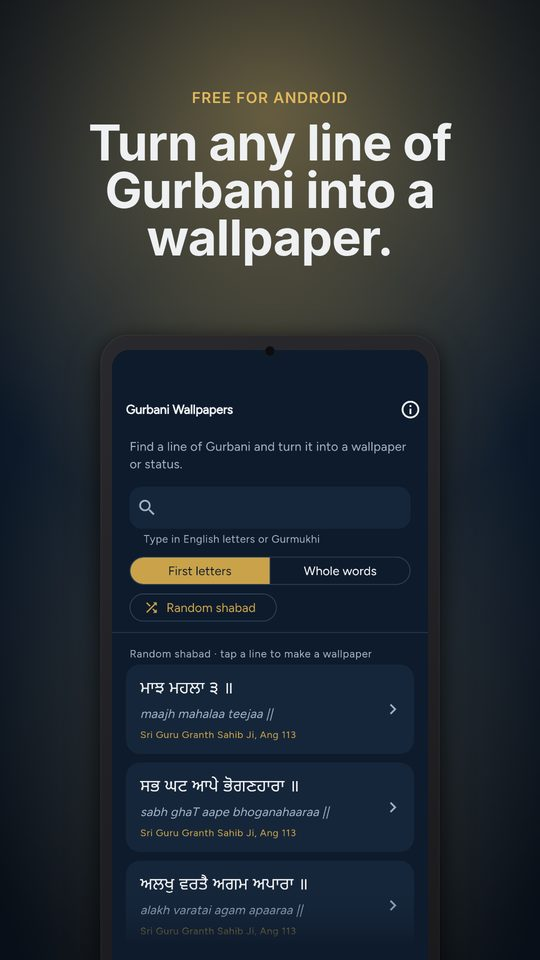
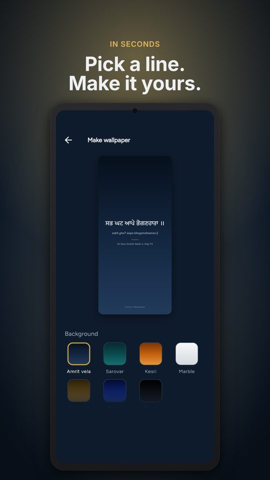
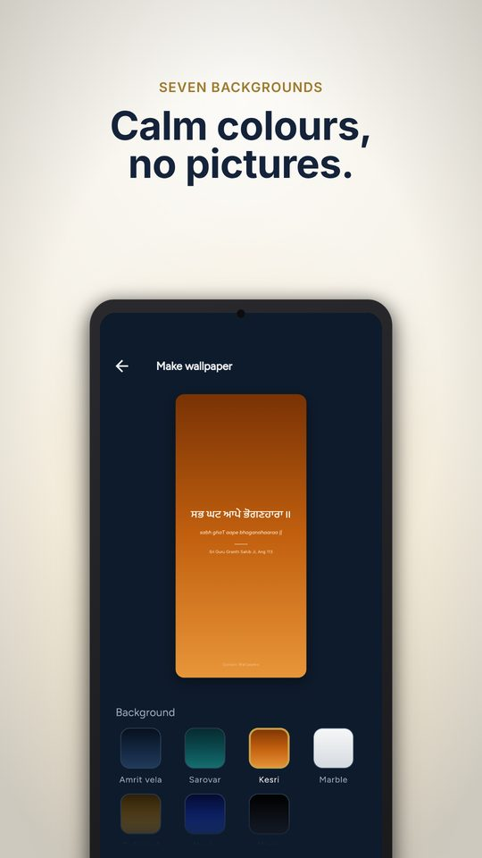
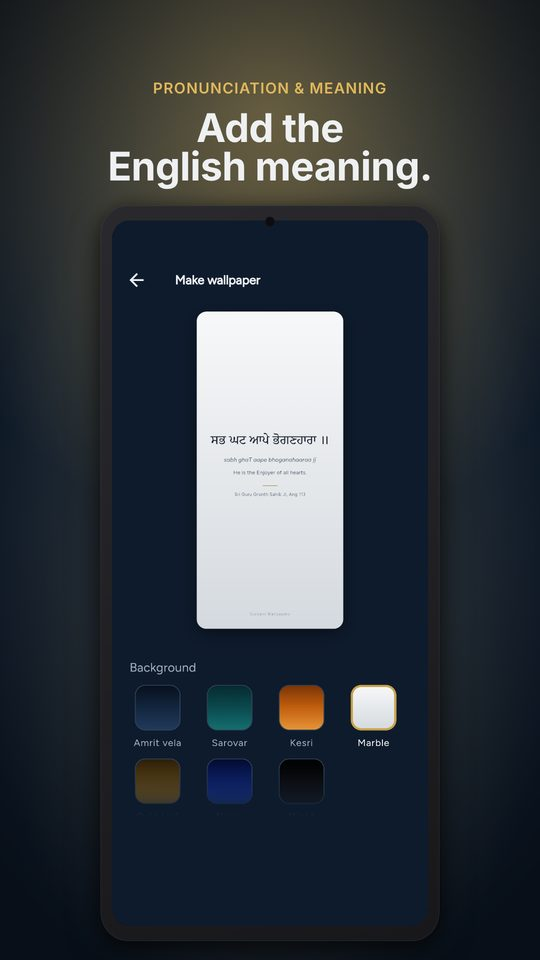
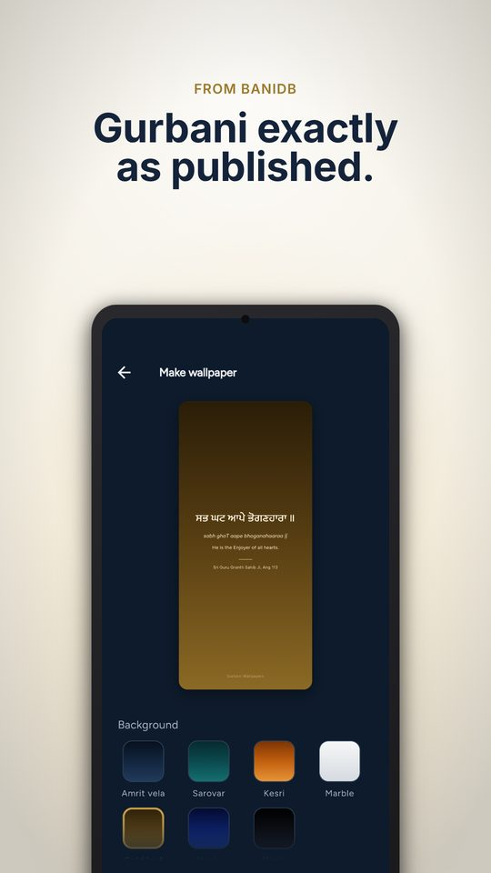

Gurbani Wallpapers
Search any line of Gurbani, choose a calm background and a Gurmukhi font, and save it as an HD phone wallpaper or WhatsApp and Instagram status. Free on Android.
Get it on Google Play




How it works
- Search by the first letter of each word, or by whole words, in English letters or Gurmukhi.
- Or tap Random shabad.
- Pick a calm background and Gurmukhi font, then save to your gallery or share.
Made with respect
- All Gurbani comes live from BaniDB (Khalis Foundation) and is shown exactly as published.
- The Gurbani text can never be edited.
- Calm gradient backgrounds only, with no pictures of people.
- Ads are family-safe and never appear on your wallpaper.